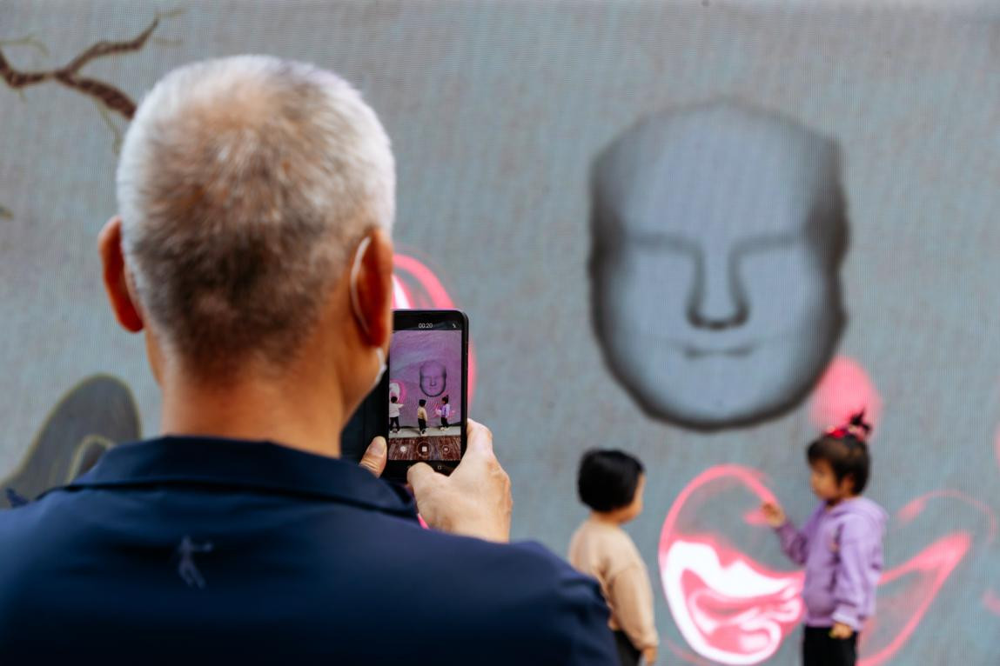
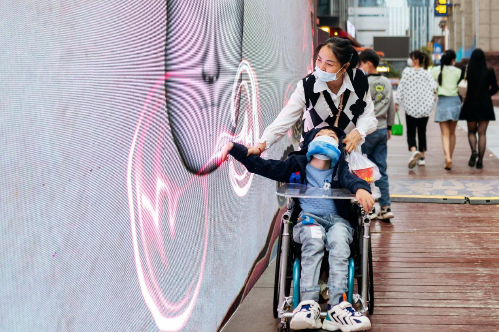
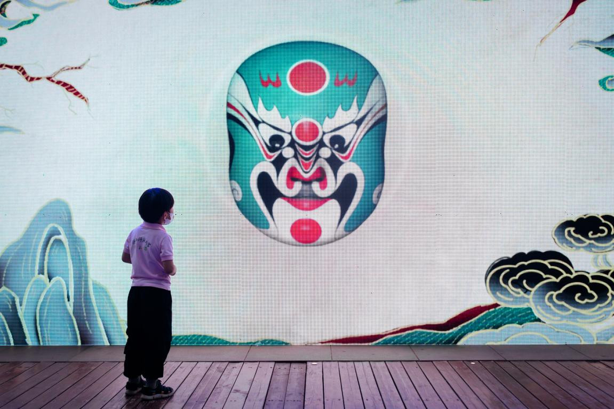
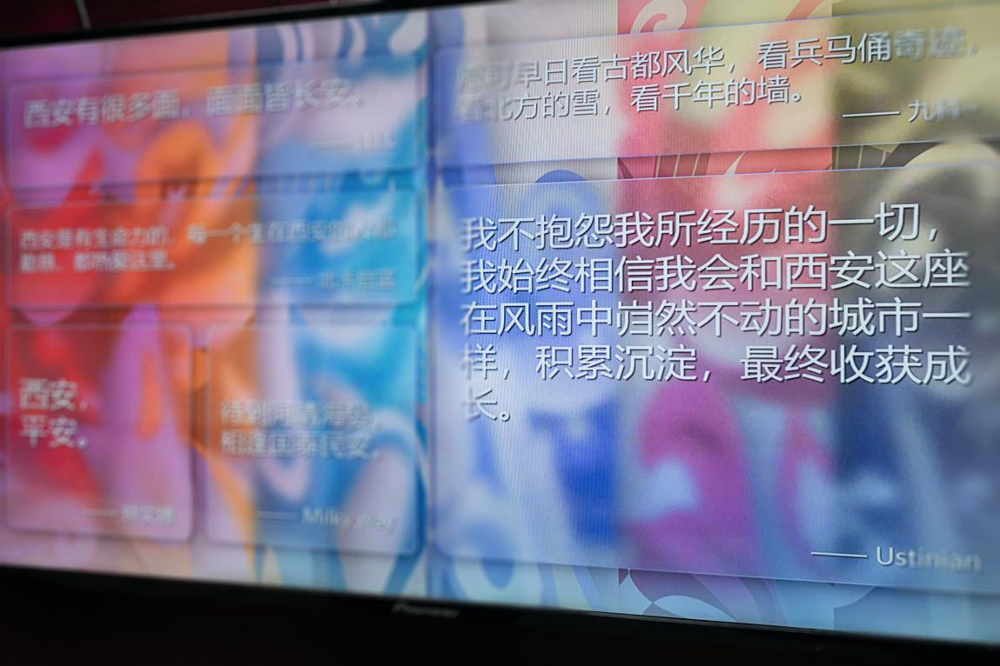
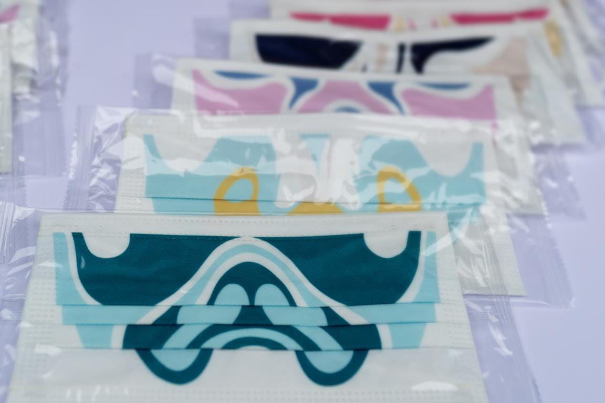
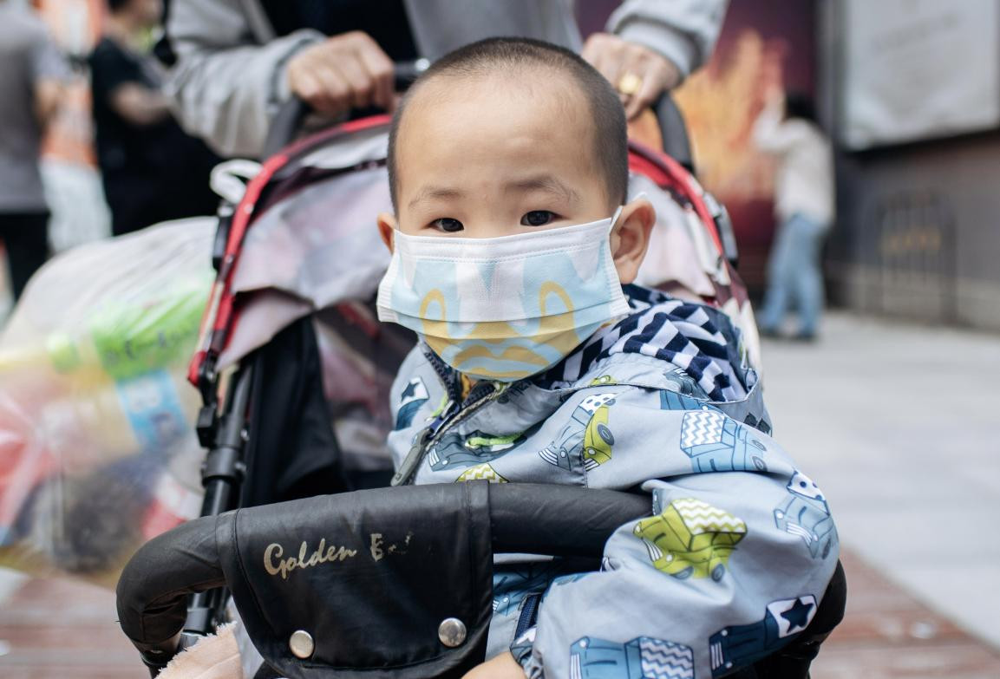
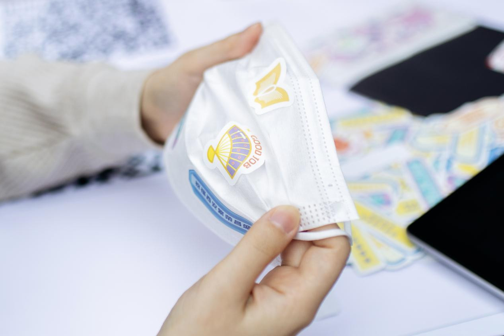
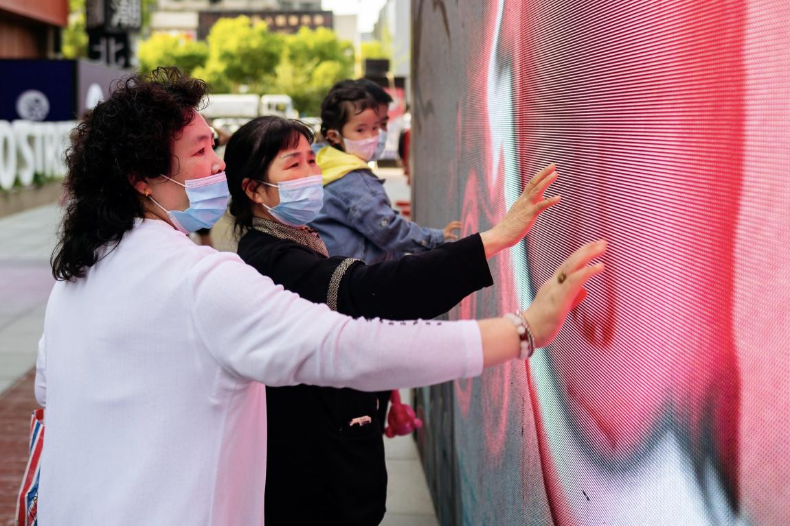
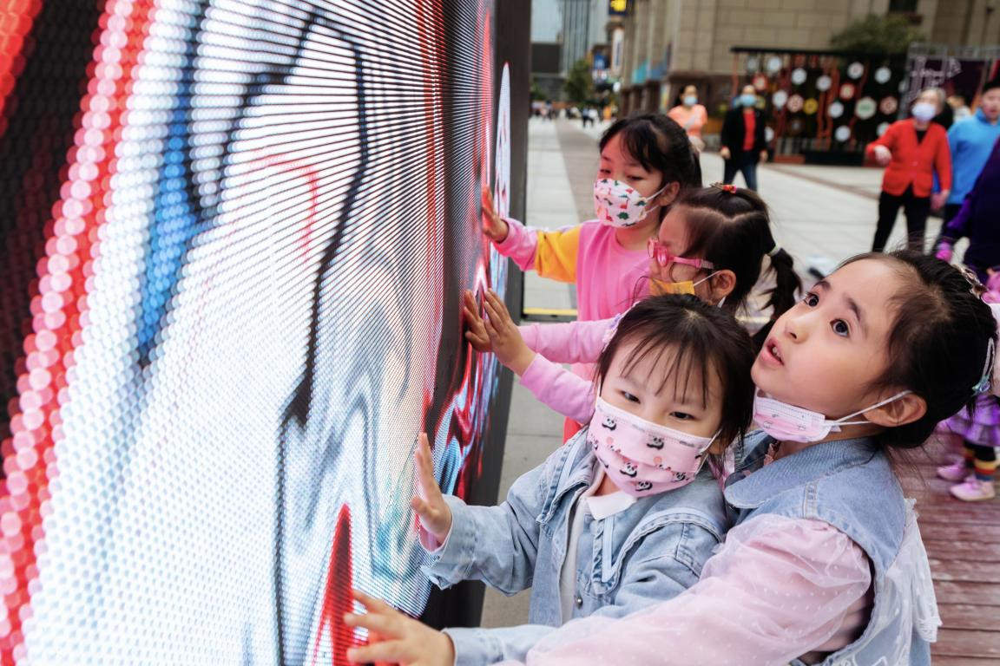
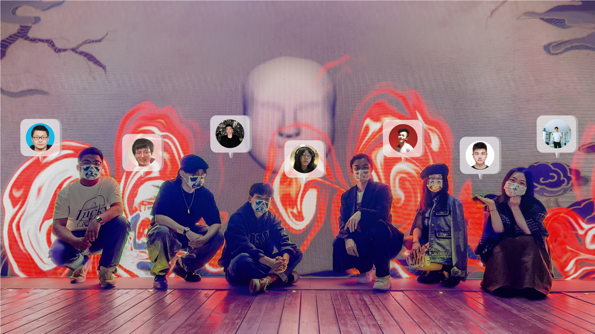

2022 / Digital media
[Digital Media] Qinqiang Opera, Xi'an Locals, and New Media Art: A Participatory Exploration on Folk Culture

The project is a cultural promotion exhibition alongside our team, Data Driven Life [DDL]. The installation is located in Xi’An, China, and presents some of the aesthetic aspects of traditional Qinqiang culture through the lens of new media. As the co-curator, I worked with my teammates to complete the planning and implementation of this project, and provide technical support during the whole project.
Update: Our work is reposted by the Design Informatics Website!
“The Impression of Cities” is an open space experience program that aims to convey the colorful spirits of different cities by assimilating their traditional local cultures into public art with design and technologies. We established an outdoor narrative exhibition in Xi’an, one of the Chinese “Four Great Ancient Capitals” in China, with the theme of the historic local opera Qinqiang. This exhibition brought visual and auditory elements of Qinqiang into interactive installations and workshop activities, exploring how new media art on folk culture enhances the visitors’ awareness of Qinqiang culture and inspires positive attitudes towards their life during the pandemic.
“The Impression of Cities: Xi’an” provided three sections: On Painting! The Interactive installation, Display Screen in Innermost Words, and Workshop: Wear Your Qinqiang Masks to create a narrative space. The dialogue is sustaining among Qinqiang, Xi’an locals in the pandemic, and the new expression of the culture.

On Painting! The interactive installation is an open-air artwork blending colorful Qinqiang opera masks and opera performance audio. People can interact with it by moving close to the screen through body movements. Their arm movements are captured by radar and drive the screen to generate surprising paint towards the feeling of the face coloring.

Display Screen in Innermost Words showcases wishes for Xi’an during the pandemic from all over China collected through social media platforms. By bridging Xi’an city and numerous individuals concerning it, the installation elicited empathy from the audience. It encouraged them to retain their wishes in the form of words in the digital space.

Workshop: Wear Your Qinqiang Masks is an activity that invites the visitors to experience and make a series of cultural and creative products about Qinqiang culture. Masks and Qinqiang masks, the most indispensable element in the pandemic and the visual symbol of Qinqiang culture, are cleverly combined through the face masks with Qinqiang facial colored patterns. Visitors can receive the face masks for free and participate in decorating different face masks with stickers.



Qinqiang culture has long been the representative of traditional Chinese culture and has international influences on the global cultural stage. This exhibition reinterprets the perseverance and rustic spirit behind the culture from a novel dimension of the combination of technology and art. The three interactive sections curated aroused discussion about how this folk culture could inspire the local community: the interactive and narrative feature builds a space for people to participate in this historic culture and reflect on the culture in the present. Across time and space, “The Impression of Cities: Xi’an” gathered culture, community, and new media art on the same stage and inspired emotion sharing and resonance in such pandemic years.


Our team:
